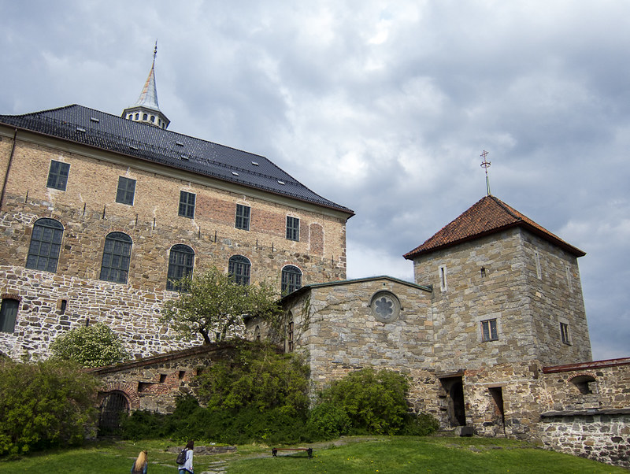

Forma parte del selecto grupo de Global Cities debido a su importancia en varios ámbitos que competen a una ciudad y a su estable conexión con el exterior. Fué además nombrada "Beta World City" por sus extraordinarias características y la sofisticación de su administración gubernamental en general.
Lo que se sabe de Oslo es que habría sido fundada alrededor del año 1000, y aunque esto parezca sorprendente hay registros y pruebas de asentamientos incluso antes de esas fechas. Sería el Rey Harald Hardrada quien habría iniciado el proyecto formalmente, al designarla Kaupstad, o lugar de comercio.
Muchos castillos fueron posteriormente construidos para servir como fortalezas para el gobernante en turno, como el Rey Haakon V, quien después de haber tomado el trono en 1299 construyó el Castillo Akershus.
El nombre Oslo, también estilizado como Ánslo, Áslo, Óslo u Opslo tiene un
origen discutido. Viene de Ás and lo; que podría significar
Prado cerca del puente o Prado de los Dioses.
Uno de los sucesos mas importantes fué el incendio de 1624, que ardió por
3 dias, consumiendo gran parte de las casas, negocios y centros
sociales/comerciales. Para el caso el Rey Christian IV decidió reconstruir
la ciudad más cerca de Akershus y convenientemente nombrarla
Christiania. Naturalmente esta fué edificada con piedra y
arcilla, que no seria tan susceptible a incendios, pero que a su vez
marcaría una diferencia socio-económica entre quienes habían sido capaces
de obtener una vivienda en el nuevo espacio y quienes aún seguían en el
viejo.
A partir de la Gran Guerra del Norte en el siglo XVIII Oslo se convirtió en
un verdadero lugar de prosperidad, pues socios comerciales como Alemania y
Gran Bretaña usaban la ciudad para todo tipo de intercambios, en
particular de tabaco y café, esto sin dejar de lado su reputación como eje
naval.
El siguiente gran cambio vendría en 1905, cuando Noruega se separó
pacíficamente de Suecia, hecho que dió pie a que en 1918 el nombre Oslo
recuperara el lugar que había perdido ante Christiania. Desde entonces
Noruega disfruta de una época de paz y crecimiento, ha mantenido índices
positivos en prácticamente todos los ámbitos con que se puede medir una
nación, y Oslo ha contribuido especialmente a mantener una fachada de
sociedad casi utópica.